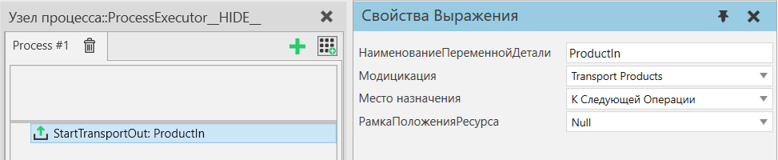

|
Оператор Начать транспортировку наружу позволяет вам начать перенос одного или нескольких экземпляров продуктов из процесса и выполнять другие операторы, пока это выполняется. Этот оператор обычно используется перед оператором Ждать Транспорт с любым количеством других операторов между ними. См. оператор Транспорт Из для получения дополнительной информации.

В режим Transport Products все транспорты продукта начнутся одновременно.
В режиме Process an Assembly операции выполняются в том же порядке, что и в операторе Транспорт Из.
Свойства
Название
|
Описание
|
НаименованиеПеременнойДетали
|
Наименование переменной, которая содержит либо Продукт(ы), которые необходимо вывезти, либо Сборку, слоты которой будут очищены от Продуктов.
Эта переменная может быть одним ссылочным типом или списком. В режиме Transport Products все продукты в списке будут транспортироваться последовательно. В режиме обработки сборки будет обработан только первый элемент в списке.
|
Модификация
|
Определяет способ вывоза продуктов.
Transport Products - В этом режиме этот оператор переносит экземпляры продукта между процессами.
Подсказка: Экземпляр продукта — это общий термин, который включает в себя как экземпляры деталей, так и экземпляры сборок, поэтому его можно использовать для отправки сборок (частично собранных или полностью собранных) из процесса.
Process an Assembly - В этом режиме этот оператор используется для переноса экземпляров продукта из экземпляра сборки, который находится в этом процессе.
|
НаименованиеПеременнойСборки
|
Наименование переменной AssemblyOrder, определяющей, какие слоты сборки будут очищены, если они в данный момент заполнены.
Подсказка: Используйте оператор GetAssembly для создания AssemblyOrder.
Если оставить пустым, все слоты сборки будут перемещены.
|
РамкаПоложенияРесурса
|
Расположение рамки, куда будет перемещаться ресурс для выбора продукта.
|
Место Назначения
|
Определяет пункт назначения, куда будут переданы продукты для транспортировки.
К Следующей операции - Экземпляр продукта транспортируется к следующему процессу с помощью транспортной системы. Транспортировка осуществляется по принципу вытягивания, что означает, что следующий процесс запрашивает продукт, как только у него появляется возможность для этого. Этот оператор завершится после того, как продукт будет получен Исполнителем первой Транспортной ссылки.
К Контейнеру Компонента - Экземпляр продукта помещается в контейнер компонента, определенный Контейнер. Если Контейнер имеет выходной порт, связанный с поведением другого контейнера, продукт проходит через Контейнер в подключенный к нему контейнер. Транспортировка осуществляется толкающим способом, что означает, что продукт вывозится, как только в контейнере назначения появляется свободное место. Как правило, это используется в поточном процессе для размещения продуктов на конвейере.
К Транспортному Узлу - Экземпляр продукта транспортируется к определенному транспортному узлу с помощью транспортной системы. В этом режиме можно использовать транспортную систему в режиме проталкивания, что означает, что продукты транспортируются к целевому узлу, используя, например, конвейер в качестве буфера.
|
УзелМестаНазначения
|
На какой транспортный узел транспортируется Экземпляр продукта, если свойство МестоНазначения определено как К Транспортному Узлу.
|
Контейнер
|
В какой контейнер транспортируется экземпляр продукта, если свойство МестоНазначени определено как К Контейнеру Компонента.
|
SendAsProductBundles
|
Это свойство может быть использовано для транспортировки нескольких продуктов в виде связки в рамках одной транспортировки.
Выбранные шаги сборки в порядке сборки всегда будут перемещаться индивидуально (по одному слоту сборки за раз при циклическом выполнении выбранных шагов сборки).
Если значение свойства равно true, невыбранные дочерние шаги выбранных шагов сборки (если есть) будут прикреплены к экземпляру продукта в первом слоте их выбранного родительского шага сборки. Более подробно, прикрепленные продукты будут транспортироваться как наборы продуктов. Пакет продуктов — это набор экземпляров продукта, созданный путем объединения их динамических компонентов. Пакеты продуктов не являются экземплярами сборки и не имеют метаданных структуры сборки.
|
|